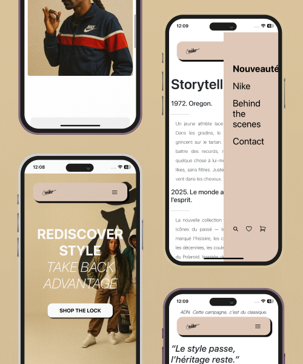

Stack Technique & Design & Composants Dynamiques
Bootstrap 5 : Architecture du layout via le système de grille et classes utilitaires pour garantir un rendu 100% responsive et une compatibilité cross-browser.
CSS3 (Vanilla) : Personnalisation avancée pour une identité visuelle forte (header flottant, style vintage-moderne) afin de sortir des standards génériques duframework.
